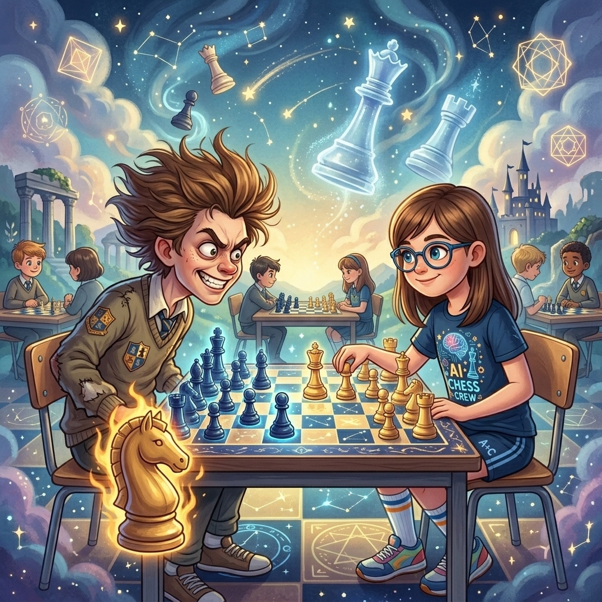
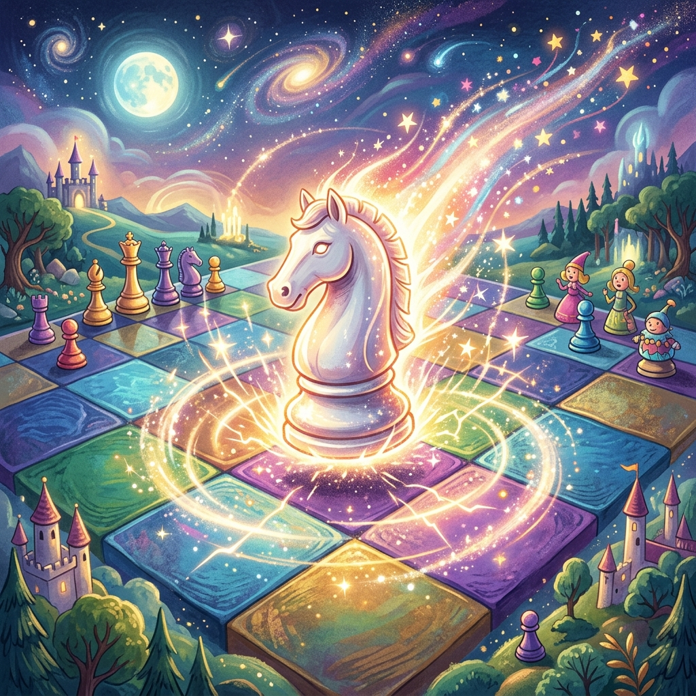

El Caballo Salvaje
Donde Martina va a un torneo lleno de niños que se creen animales y descubre que un caballo indomable en d5 puede ganar una guerra
♟️ Ver partida histórica: Smyslov vs Rudakovsky (1945) ↓▶️ ¿Prefieres escuchar la historia? Clic aquí para ver el Audiolibro Animado
Hoy el torneo es distinto —dijo su papá mientras estacionaba el auto frente al polideportivo.
Martina alzó la vista de su libreta de aperturas. «Distinto» podía significar muchas cosas. Podía significar que jugaban sin reloj (aburrido). Podía significar que había jugadores de otros colegios (interesante). O podía significar que su rival traía galletas sin azúcar para compartir (crimen).
—¿Distinto cómo?
—Hay un grupo nuevo. Se llaman... —su papá frunció el ceño, buscando la palabra—... therians.
—¿Y eso qué es?
—Niños que se identifican con animales. No físicamente, sino por dentro. Sienten que su verdadero yo es un animal. Algunos son lobos, otros gatos, otros aves... Ya sabes, cosas de internet.
Martina guardó su libreta y se bajó del auto.
—Entonces hoy hay un torneo con niños que se creen animales —dijo—. Esto promete.
—No «se creen» —la corrigió su papá—. Se identifican. Es distinto.
—Como Peoncito con su bigote.
—¿Qué?
—Nada. Chiste interno.

El polideportivo olía a gimnasio y a algo más. Algo vagamente... animal. No era olor a perro mojado ni a jaula de hámster. Era una mezcla de emoción y nervios, con un toque de bosque imaginario.
Martina entró y lo primero que vio fue a una niña con orejas de gato. Orejas postizas, de peluche, perfectamente colocadas sobre su cabeza. La niña lamía el borde de su botella de agua. Metódicamente. Como un gato.
—Interesante —dijo Martina.
La segunda cosa que vio fue a un niño con una cola de zorro colgando del cinturón. Estaba agachado junto a su tablero, moviendo su peón con la nariz.
—Más interesante todavía.
La tercera cosa —y aquí Martina se detuvo en seco— fue un niño de su edad, delgado, de pelo castaño revuelto, que no llevaba orejas ni cola ni nada. Pero se movía de una forma muy particular: avanzaba dos pasos y luego uno de lado. Dos pasos y uno de lado. Incluso cuando estaba quieto, tamborileaba los dedos en ese ritmo. Dos adelante, uno al costado.
Martina lo observó con atención profesional. Reconocía ese movimiento en cualquier parte.
—Ese niño camina en L —dijo.
El niño se detuvo. Giró la cabeza. Sus ojos eran grandes, oscuros, y tenían algo que Martina solo había visto en los caballos de verdad: inteligencia salvaje.
—Me llamo Equis —dijo—. Y no «camino en L». Me muevo como lo que soy.
—¿Y qué eres?
—Caballo.
Lo dijo con la misma naturalidad con que otra persona diría «tengo hambre». No era una broma. No era una pose. Equis era un caballo por dentro y no le importaba quién lo supiera.
Martina asintió lentamente.
—Yo conocí a un caballo que a veces saltaba en Ŋ —dijo—. Pero cuando acertaba la L, era imparable.
Equis la miró con una chispa de reconocimiento.
—Tú entiendes.
—Entiendo de caballos —dijo Martina—. Es mi pieza favorita. Bueno... —hizo una pausa táctica—. Después de la clavada.
El torneo comenzó. Dieciséis mesas. Treinta y dos jugadores. De los treinta y dos, al menos diez llevaban algún tipo de accesorio animal. La niña gato lamía sus piezas antes de moverlas. El niño zorro olfateaba el tablero antes de cada jugada. Un chico mayor con máscara de lobo aullaba quedamente cada vez que capturaba algo.
En la mesa 3, Martina fue emparejada con... Equis.
—Sabía que esto iba a pasar —dijo Peoncito.
Martina parpadeó. Peoncito estaba sentado en el borde de su tablero, con las piernas colgando sobre la casilla e4. Su bigote estaba perfectamente encerado. Por una vez.
—No puedes estar aquí —susurró Martina—. Esto es el mundo real.
—Soy tu imaginación. Tu imaginación puede estar donde quiera. Es como tener un pase VIP a todos lados.
—Eso no es lo que significa VIP.
—Peoncito, el peón más importante. La P es de Peón. Las otras dos letras las estoy investigando.
Martina suspiró y se concentró en el tablero. Equis ya estaba listo. Sus dedos tamborileaban el ritmo de caballo: dos golpes, uno de lado. Dos golpes, uno de lado.
—Juego con blancas —dijo Martina, y adelantó su peón de rey: e4.
Equis no respondió con e5 ni con c5. Respondió con... un relincho suave.
Y luego jugó c5. Defensa Siciliana. La defensa más agresiva del negro. La defensa de los que no vienen a empatar.
—Siciliana —dijo Martina, impresionada a pesar suyo—. Buena elección.
—Los caballos no pedimos permiso —respondió Equis—. Galopamos.
Martina desarrolló su caballo a f3. Equis respondió e6, una variante cerrada. Martina jugó d4, abriendo el centro. Equis capturó: cxd4. Martina recapturó con el caballo: Cxd4. Equis sacó su caballo a f6. Martina desarrolló el otro: Cc3. Equis jugó d6, un movimiento tranquilo pero sólido.
—Tus caballos están inquietos —observó Equis repentinamente.
—¿Perdón?
—El de f3. El de c3. Los noto nerviosos. Quieren saltar pero no saben adónde. No tienen un propósito.
Martina lo miró fijamente. Ese chico hablaba de los caballos del tablero como si fueran de verdad. Como si pudiera oírlos. Como si él mismo fuera uno de ellos.
—Dice la verdad —susurró Peoncito desde e4—. Yo conozco a los caballos. Tengo un primo que es medio caballo. Por parte de madre.
—No tienes madre. Eres una pieza de ajedrez.
—Detalles.
La partida avanzó. Martina jugó Ae2, un desarrollo tranquilo. Equis respondió Ae7. Martina enrocó: 0-0. Equis también: 0-0. Ambos reyes encontraron seguridad. Ambas posiciones eran sólidas. Pero los caballos de Equis empezaban a moverse.
Primero fue el caballo de f6. Saltó a g4. Amenazaba el peón de e3. Luego a e5. Luego a c6. Cada salto era un latigazo. Cada movimiento descolocaba algo.
—Tus caballos —dijo Martina, siguiendo el baile con los ojos— se mueven como si el tablero fuera una pradera.
—Lo es —dijo Equis, y por primera vez sonrió—. El tablero es una pradera. Las casillas son pasto. Y nosotros... nosotros galopamos.
Martina sintió algo que no sentía a menudo: admiración. No por la calidad de las jugadas de Equis —que era buena, pero no excepcional— sino por su forma de entender el ajedrez. Él no calculaba variantes. Él sentía los saltos. Como el Caballo de Ŋ sentía la Ŋ. Como Tal sentía los sacrificios.
—Mikhail Tal —dijo Martina, casi para sí misma— habría disfrutado jugar contra ti. Él también sentía el tablero. No solo lo pensaba.
Equis relinchó. Esta vez más fuerte. Varios jugadores de mesas cercanas levantaron la vista. La niña gato bufó. El niño lobo aulló en solidaridad.
Llegó el momento. Martina había estado preparando algo. Algo que requería paciencia, precisión y un caballo. Un solo caballo en el lugar correcto.
Jugó Dg3. Su dama apuntó a g7. Equis respondió Rh8, poniendo a salvo a su rey. Martina jugó Td1, llevando la torre al centro. Equis movió su dama a c7.
—Ahora —susurró Peoncito—. Es el momento.
—Lo sé.
Martina jugó Cd5.

El caballo blanco aterrizó en el centro del tablero como un rayo. La casilla d5. Protegido por el peón de e4. Apuntando a la dama negra en c7. Apuntando al peón de f6. Apuntando a todo.
Equis se quedó inmóvil. Sus dedos dejaron de tamborilear. Era la primera vez en toda la partida que su ritmo de caballo se detenía.
—Tu caballo... —dijo— está en el centro del mundo.
—Se llama puesto avanzado —dijo Martina—. Una casilla en territorio enemigo protegida por un peón propio. Desde aquí, mi caballo controla ocho casillas. Ocho. Como las patas de una araña. Como los tentáculos de un pulpo. Como... bueno, como un caballo en d5.
Equis lo miró con reverencia. El caballo blanco, desde d5, era intocable. Si Equis lo capturaba con su peón de e6, Martina recapturaría con su peón de e4, abriendo la columna e y lanzando un ataque devastador sobre el rey negro. Era una trampa. Y Equis lo sabía.
—No puedo tomarlo —dijo Equis—. Si lo tomo, pierdo.
—Exacto. Y si no lo tomas, también pierdes. Porque desde ahí, mi caballo te va a destrozar.
—Judith Polgar —dijo Peoncito, citando de memoria— enseñó que el caballo es la pieza más subestimada del tablero. La gente se deslumbra con la dama, se impresiona con las torres, pero un caballo en el centro es un rey sin corona.
—Eso no lo dijo Polgar —dijo Martina.
—Lo dijo su caballo. El que tenía en d5 en 1993. Contra Spassky. Fue un escándalo.
—Estás inventando.
—Estoy mejorando la realidad. Que es lo que hacemos las piezas imaginarias.
La partida entró en su fase final. Martina, con su caballo monstruoso en d5, empezó a tejer una red. El caballo saltaba de d5 a f6, de f6 a e4, de e4 a d5 otra vez. Un baile hipnótico. Un torbellino de casillas negras y blancas.
Equis intentó defenderse. Movió su dama, movió sus torres, movió sus alfiles. Pero cada movimiento lo dejaba más atrapado. El caballo de d5 era el sol alrededor del cual giraban todas las demás piezas.
—Tu caballo me está mirando —dijo Equis, y su voz tenía una mezcla de terror y fascinación—. Me mira y yo no puedo moverme.
—Es lo que hace un buen caballo —dijo Martina—. Te clava sin ser un alfil. Te amenaza sin ser una torre. Te asfixia sin ser un peón pasado. Es la pieza más extraña del ajedrez y por eso es la más bella.
Martina jugó Ce4, llevando su caballo (el otro, el de c3) a una posición de ataque. El caballo blanco, ya fuera de d5 momentáneamente, se unió al asalto.
Luego Cxf6+. Jaque con captura. El peón negro de g7 recapturó. Y entonces Martina llevó su dama a h4. Amenaza de mate en h7.
Equis movió su torre a g8. Defensa desesperada. Pero ya no había salvación. Martina jugó Ce8.
El caballo —el INVENCIBLE, el de d5— saltó a e8 como un cometa. Amenazaba la dama negra. Amenazaba el mate. Amenazaba todo.
Equis miró el tablero durante un minuto entero. Sin pestañear. Sin relinchar. Sin moverse.
Luego, lentamente, tumbó su rey.
—Jaque mate —dijo, y su voz fue la de alguien que acaba de presenciar algo sagrado—. Tu caballo me ha dado mate. No tu dama. No tu torre. Tu caballo.
—Eso es lo que hacemos los que entendemos de caballos —dijo Martina—. Les damos el centro. Y ellos nos dan la victoria.
Después de la partida, Equis se acercó a Martina. Ya no se movía en L. Caminaba normal. Como si la partida lo hubiera aterrizado.
—Quiero preguntarte algo —dijo.
—Dispara.
—¿Tú crees que existió un caballo de verdad? Uno que saltaba en L y nunca se equivocaba. Uno que podía dominar un tablero entero desde una sola casilla.
Martina sonrió. No la sonrisa de quien sabe la respuesta. La sonrisa de quien sabe que la respuesta no importa.
—Yo conozco a uno que a veces salta en Ŋ. Pero cuando acierta la L, es más poderoso que una dama.
—¿Existe de verdad?
—Existe para quien cree en él. Como los caballos interiores. Como los therian. Como todo lo que no se ve pero se siente.
Equis asintió. Y luego, sin previo aviso, pegó un relincho tan potente que la niña gato se cayó de la silla y el niño lobo aulló tres veces seguidas en solidaridad.
—Ese fue de celebración —dijo Equis—. No de derrota.
—Lo sé.
De vuelta en el auto, Martina iba en silencio. Su papá la miró por el retrovisor.
—¿Qué tal el torneo?
—Gané.
—Eso ya lo sé. ¿Qué tal los niños therian?
—Interesantes —dijo Martina—. Especialmente un caballo. Jugaba como si el tablero fuera un campo abierto. No calculaba: galopaba.
—¿Y qué aprendiste?
Martina pensó un momento.
—Que cada pieza tiene su forma de moverse. Y cada persona también. El truco no es moverte como te dicen. El truco es moverte como eres.
Su papá sonrió. Martina se recostó en el asiento y cerró los ojos.
En el tablero de su mente, un caballo galopaba libre por las sesenta y cuatro casillas. No contaba los saltos. No medía las L. Simplemente corría. Libre. Salvaje. Imparable.
Y en algún rincón del Reino de las Sesenta y Cuatro Casillas, el Caballo de Ŋ terminó su salto y aterrizó en e5 con una precisión que no había tenido en siglos. Nadie lo vio. Pero él lo sintió.
Había sido una L perfecta.
Fin del cuarto cuento.
Continuará…
🏛️ El Secreto detrás del Cuento
El caballo invencible que usa Martina para ganar este cuento no es pura imaginación. En 1945, durante el campeonato de la Unión Soviética en Moscú, el gran maestro Vasily Smyslov jugó exactamente esta misma estrategia contra Iosif Rudakovsky. Smyslov instaló a su caballo blanco en la casilla d5 y demostró al mundo cómo un "puesto avanzado" en el centro puede dominar todo el tablero. ¡Descúbrelo tú mismo!